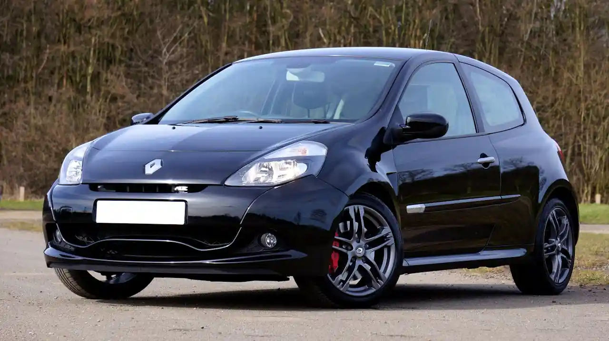
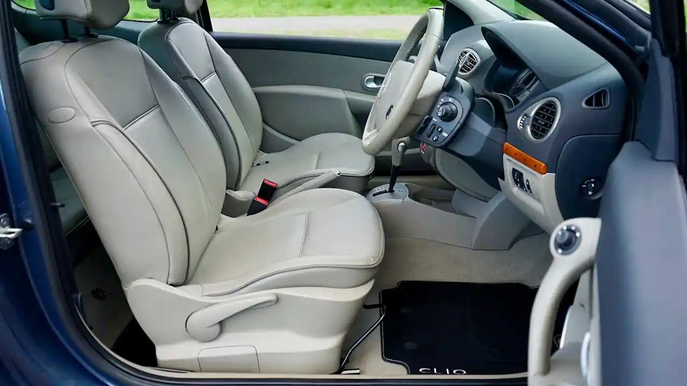
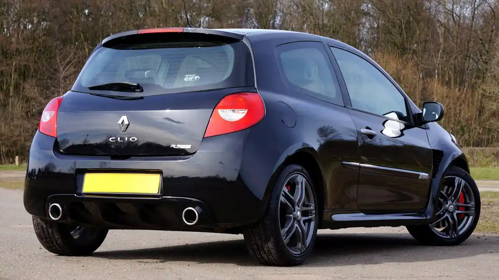

For over three decades, the Renault Clio has proven that great things really do come in small packages. First introduced in 1990, the Clio replaced the aging Renault 5 and quickly became a cornerstone of Renault's lineup. Today, it stands as one of the best-selling superminis in Europe, known for its balance of affordability, efficiency, and style.

At first glance, the Clio's appeal is obvious. Its sleek, modern design gives it a more premium feel than many competitors in its class. The latest generation features sharp LED headlights, sculpted body lines, and a confident stance that makes it look just as comfortable parked outside a café as it does navigating tight urban streets. But the Clio isn't just about looks—it's built to perform in everyday life.
Inside, the Clio offers a surprisingly refined cabin. High-quality materials, a digital instrument cluster, and an intuitive infotainment system elevate the driving experience. Renault has clearly focused on making the interior feel modern and connected, appealing to younger drivers while still maintaining practicality. Despite its compact size, the Clio provides ample legroom and one of the largest trunks in its class, making it ideal for both daily commutes and weekend trips.
Under the hood, the Clio offers a range of efficient engines designed to suit different driving needs. From economical petrol options to hybrid variants, it reflects the industry's shift toward sustainability without sacrificing performance. The hybrid model, in particular, stands out by delivering impressive fuel economy while still providing smooth acceleration—perfect for city driving where stop-and-go traffic is the norm.
"The Clio proves you don't need a big car to enjoy a big driving experience."

However, what truly sets the Clio apart is its driving dynamics. Renault has a long history in motorsport, and that heritage shines through in the Clio's handling. It feels agile and responsive, making even routine drives more engaging. Whether weaving through narrow streets or cruising on the highway, the Clio maintains a sense of control and confidence that drivers appreciate.
The Clio's legacy is also deeply rooted in performance. Models like the Clio Renault Sport (RS) have become icons among enthusiasts, offering thrilling performance in a compact package. These versions helped solidify the Clio's reputation as more than just a practical hatchback—they showed it could be genuinely fun to drive.
Safety and technology are another area where the Clio excels. Modern versions come equipped with advanced driver assistance systems, including lane-keeping assist, adaptive cruise control, and automatic emergency braking. These features not only enhance safety but also make driving more convenient, especially for younger or less experienced drivers.
"It's not just transportation—it's personality on four wheels."

In a market crowded with compact cars, the Renault Clio continues to stand out by staying true to its core identity. It's affordable without feeling cheap, stylish without being flashy, and practical without being boring. That balance is what has kept it relevant for over 30 years.
As the automotive world moves toward electrification and smarter technology, the Clio is evolving alongside it. Yet, it never loses sight of what made it successful in the first place: delivering a reliable, enjoyable driving experience for everyday people.
The Renault Clio isn't just a car—it's a reminder that innovation and simplicity can coexist. And in a world of increasingly complex vehicles, that might be exactly what drivers are looking for.